4L60-E/4L65-E/4L70-E - Automatic Transmission
Valve Body and Pressure Switch Replacement
Removal Procedure
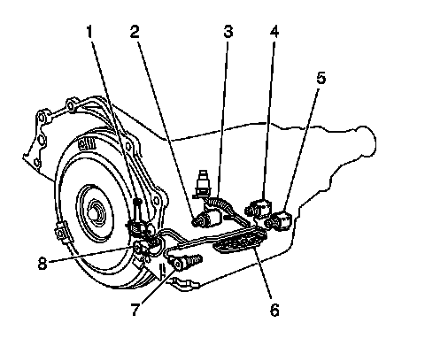
1. Ensure that removal of the valve body is necessary before proceeding.
The following components can be serviced without removing the valve body from the transmission:
^ The torque converter clutch solenoid (1)
^ The pressure control solenoid (2)
^ The internal wiring harness (3)
^ The 2-3 shift solenoid (4)
^ The 1-2 shift solenoid (5)
^ The transmission fluid pressure manual valve position switch (6)
^ The 3-2 shift solenoid (7)
^ The torque converter clutch pulse width modulation (TCC PWM) solenoid (8)
2. Remove the fluid level indicator.
3. Remove the transmission filter.
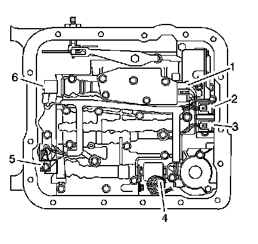
4. Disconnect the internal wiring harness electrical connectors from the following components:
^ The transmission fluid pressure manual valve position switch (1)
^ The 1-2 shift solenoid (2)
^ The 2-3 shift solenoid (3)
^ The pressure control solenoid (4)
^ The TCC PWM solenoid (5)
^ The 3-2 shift solenoid (6)
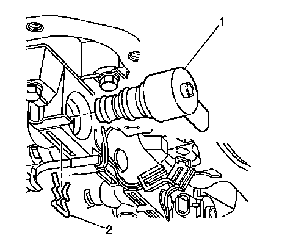
5. Remove the TCC PWM solenoid retainer (2) with a small screwdriver.
Rotate the solenoid (1) in the bore, if necessary, until the flat part of the retainer (2) is visible.
6. Remove the TCC PWM solenoid (1) in order to access the TCC solenoid bolts.
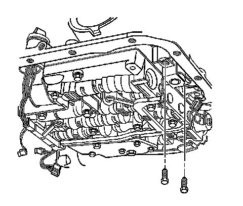
7. Remove the TCC solenoid bolts.
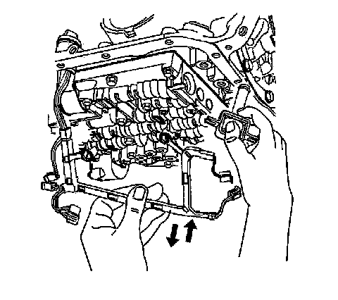
8. Remove the TCC solenoid (with O-ring seal) and wiring harness from the valve body.
9. Reposition the harness to the side of the transmission case.
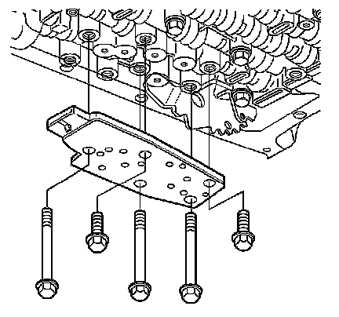
10. Remove the valve body bolts which retain the transmission fluid pressure switch to the valve body.
11. Remove the transmission fluid pressure switch.
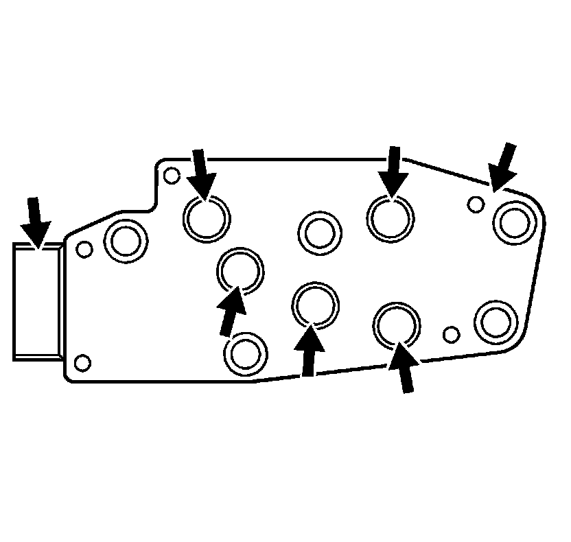
12. Inspect the transmission fluid pressure manual valve position switch assembly for the following conditions:
^ Damage
^ Debris
^ Damaged or missing O-rings
^ Cracked connector
^ Loose electrical terminals
^ Poor terminal retention
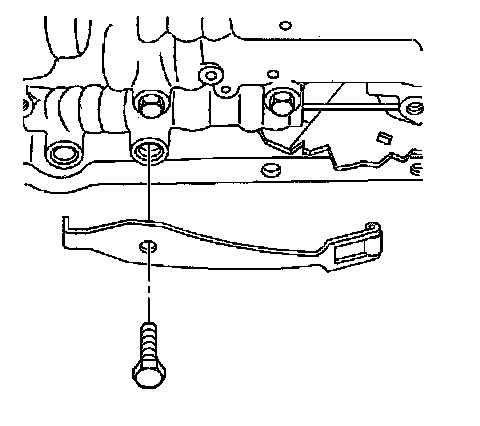
13. Remove the manual detent spring bolt.
14. Remove the manual detent spring.
15. Inspect the manual detent spring for cracks or damage.
Important: Keep the valve body level when lowering it from the vehicle. This will prevent the loss of checkballs located in the valve body passages.
16. Remove the remaining valve body bolts.
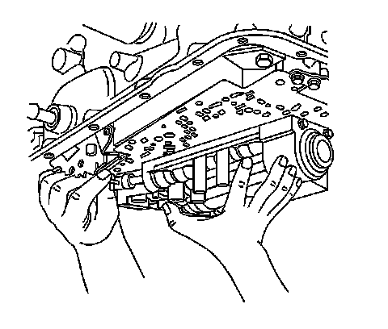
17. Carefully lower the valve body from the transmission case while simultaneously disconnecting the manual valve link.
Ball Check Valves:
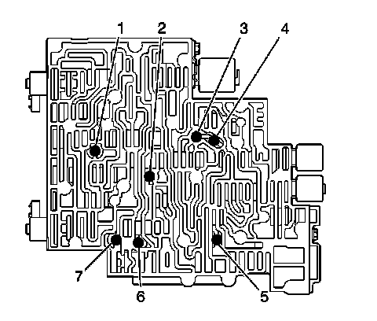
18. Remove the 7 valve body checkballs.
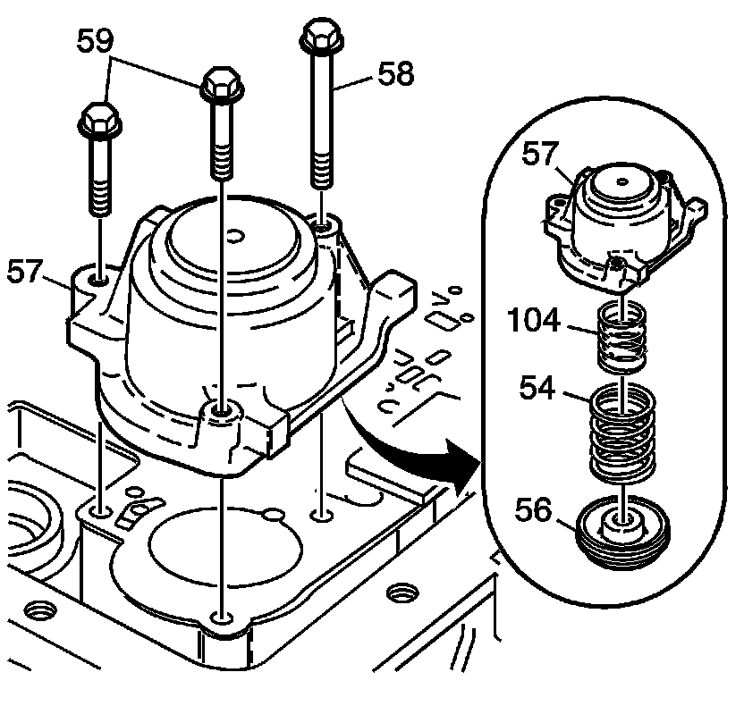
Important: Some models do not have an outer spring. Note spring usage during removal.
19. Remove the accumulator cover bolts (58, 59).
20. Remove the 1-2 accumulator cover and pin assembly (57).
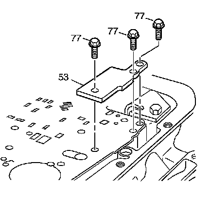
21. Remove the spacer plate support bolts (77).
22. Remove the spacer plate support (53).
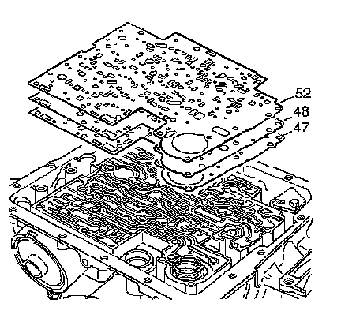
23. Remove the valve body gasket (52), the valve body spacer plate (48) and the case gasket (47). Discard the gaskets. Do not reuse.
Installation Procedure
1. Install a NEW valve body gasket (52), the valve body spacer plate (48) and a NEW case gasket (47).
Notice: Refer to Fastener Notice.
2. Install the spacer plate support (53) and bolts (77).
Tighten the bolts to 10 N.m (89 lb in).
3. Install the 1-2 accumulator cover and pin assembly (57).
4. Install the 1-2 accumulator cover bolts (58, 59).
Tighten the bolts to 10 N.m (89 lb in).
Ball Check Valves:
5. Install the 7 checkballs into the valve body.
6. Install the valve body to the transmission case while simultaneously connecting the manual valve link to the manual valve.
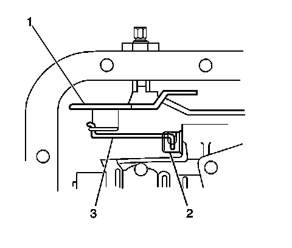
7. Verify that the manual valve link (3) is installed properly to the inside detent lever (1) and the manual valve (2).
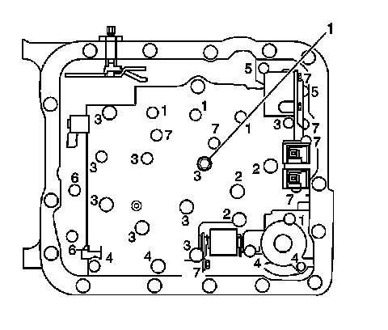
8. Install one bolt (M6 X 1.0 X 47.5) hand tight in the center (1) of the valve body to hold it in place.
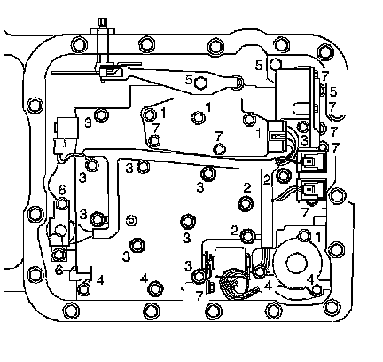
Important: When installing bolts throughout this procedure, be sure to use the correct bolt size and length in the correct location as specified.
9. Do not install the transmission fluid indicator stop bracket and bolt at this time.
Install but do not tighten the valve body bolts which retain only the valve body directly.
Each numbered bolt location corresponds to a specific bolt size and length, as indicated by the following:
^ M6 X 1.0 X 65.0 (1)
^ M6 X 1.0 X 54.4 (2)
^ M6 X 1.0 X 47.5 (3)
^ M6 X 1.0 X 35.0 (4)
^ M8 X 1.0 X 20.0 (5)
^ M6 X 1.0 X 12.0 (6)
^ M6 X 1.0 X 18.0 (7)
10. Install the manual detent spring.
11. Install but do not tighten the manual detent spring bolt.
12. Install the transmission fluid pressure switch.
13. Install but do not tighten the valve body bolts which retain the transmission fluid pressure switch to the valve body.
Notice: Torque valve body bolts in a spiral pattern starting from the center. If the bolts are torqued at random, valve bores may be distorted and inhibit valve operation.
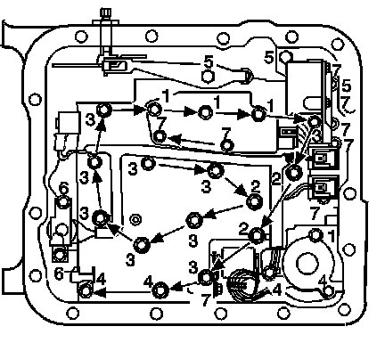
14. Tighten the valve body bolts in a spiral pattern starting from the center, as indicated by the arrows.
Tighten the bolts in the sequence shown to 11 N.m (97 lb in).
15. Ensure that the manual detent spring is aligned properly with the detent lever.
Tighten the bolt to 11 N.m (97 lb in).
16. Install the TCC solenoid with a NEW O-ring seal to the valve body.
17. Install the TCC solenoid bolts.
Tighten the bolts to 11 N.m (97 lb in).
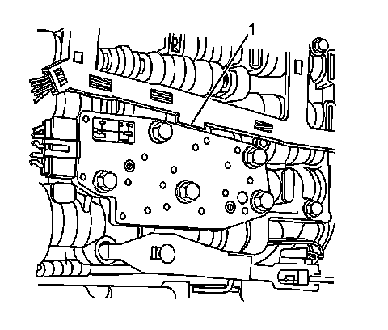
18. Install the internal wiring harness to the valve body. The internal wiring harness has a tab (1) on the edge of the conduit.
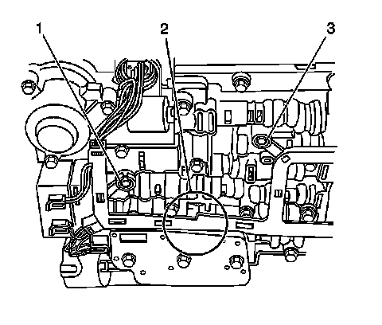
19. Place the tab between the valve body and the pressure switch in the location shown (2). Press the harness into position on the valve body bolt bosses (1, 3).
20. Install the TCC PWM solenoid (1) to the valve body.
21. Install the TCC PWM solenoid retainer (2).
22. Connect the internal wiring harness electrical connectors to the following components:
^ The transmission fluid pressure manual valve position switch (1)
^ The 1-2 shift solenoid (2)
^ The 2-3 shift solenoid (3)
^ The pressure control solenoid (4)
^ The TCC PWM solenoid (5)
^ The 3-2 shift solenoid (6)
23. Install the transmission filter.
Important: It is recommended that transmission adaptive pressure (TAP) information be reset.
Resetting the TAP values using a scan tool will erase all learned values in all cells. As a result, the engine control module (ECM), powertrain control module (PCM) or transmission control module (TCM) will need to relearn TAP values. Transmission performance may be affected as new TAP values are learned.
24. Reset the TAP values. Refer to Transmission Adaptive Functions (TCM).